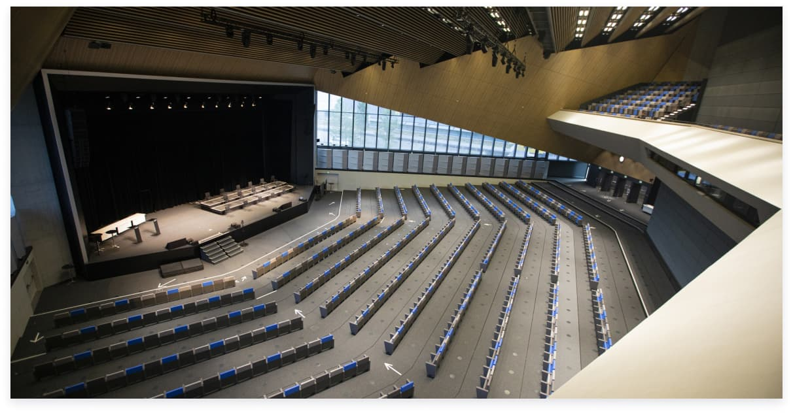

Back to all news
News

Navigating the COVID-19 situation through flexibility (AIPC COMMUNIQUÉ ARTICLE)
Since the onset of the COVID-19 pandemic, the global meeting industry has been harshly affected by the cancellation of hundreds of exhibitions, conventions and conferences. Most urgently, convention centers are seeking ways to reactivate business to meet their financial obligations. This is a difficult challenge: new health and safety regulations and the fear of crowds in the minds of millions have forced venues to reconsider the traditional (face to face in tightly packed, fixed, closed auditoriums) event format.
Hybrid events
At this critical junction, the main alternatives (1) are hybrid events, in which only part of the audience is physically present at an event while the rest attend remotely, and varied conference style layouts that respect a set distance between seats (1.5 to 2 meters). In preparation for its re-opening in August 2020, Lausanne’s Swiss Tech Convention Center (STCC) conducted extensive planning based on these options, showing how a flexible venue may ensure the safety of events and provide peace of mind to both attendees and organizers.
Flexibility and speed
Made scalable and modular through an automatic Gala Venue Transformation System, the STCC can convert its vast conference hall into a large flat room or subdivide it into several smaller rooms. Not only does the system easily handle the unique factors of various events, but it can also accommodate safety protocols in the face of COVID-19 challenges. As Christophe Leyvraz, head of client experience at the center, pointed out: “The flexibility and speed of seat conversion of the Gala Venue Seating System has helped us plan for future demands of COVID regulations and the variation of client requirements for auditorium capacity and seating plans.” Hence, the STCC was able to rapidly create a series of new conference space layouts in line with local safety measures, all of which have already obtained the necessary approvals.
Events such as seminars, business meetings and concerts will be held in a variety of formats, from small to mid-size to hybrid to on-site events, all in safely configured layouts. This has given the STCC the ability to market to associations and companies with real dynamic solutions to the pandemic speeding up the recovery.
The COVID-19 pandemic obliged convention centers around the world to explore new event formats and space layouts to ensure a safe client experience. The STCC was no exception. However, equipped with a Gala System, it was accustomed to space reconfiguration: breaking down the scale of its conference hall to suit smaller numbers of people or serve several simultaneous events was already part of its daily routine, just like last-minute changes in layout to accommodate clients’ needs. In response to COVID-19, the Gala System further proved its worth as an effective tool to balance the need to assemble and interact with the need to maintain safe distancing. The trend in the meeting industry for increased space versatility is likely to intensify in the years to come, while the current exercise highlights the need to support unpredictable demands.